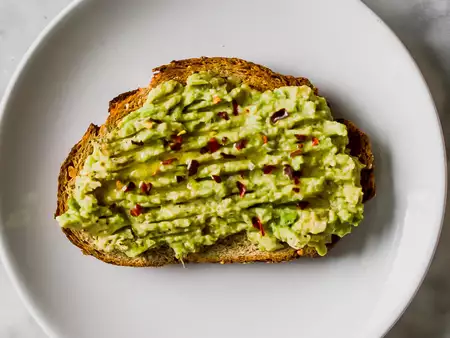
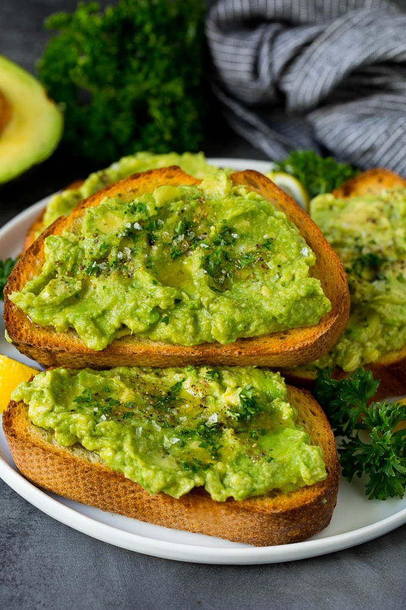
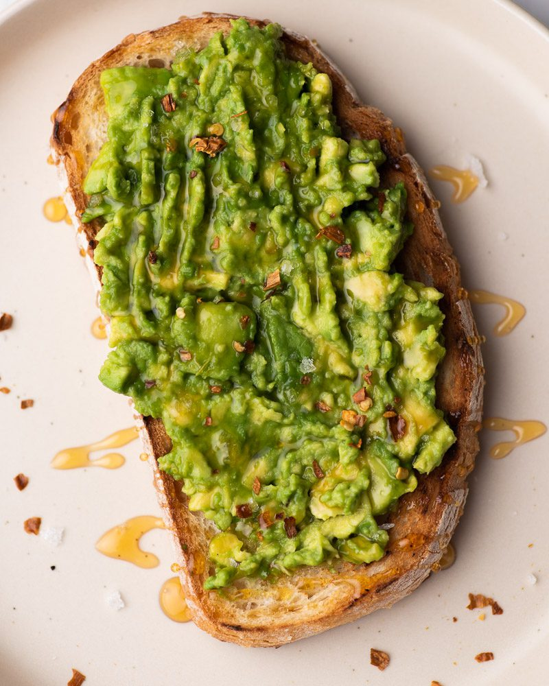

Sean Cornely's Recipes
DART 340
Welcome to Sean Cornely's Recipes. Here you will find 3 easy to make recipes for a college budget. Click the "NEXT" button to advance to the next recipe.
Avocado Toast
An easy breakfast option for college students who have a late start to class!
|  |
 |
|  |
 |
INGREDIENTS & NECESSITIES
- Wholly Guacamole Avocado Paste
- Any type of bread
- Salt
- Crushed Red Pepper
- Olive Oil
- Utensils (Spoon and Knife)
- A Toaster or Toaster Oven
COOKING STEPS
- Begin by toasting your bread.
- Once toast is perfect, take your knife and spread your Wholly Guacamole Avocado paste on your toast.
- Sprinkle your crushed red pepper and salt on top of your toast
- Pour some olive oil into a spoon and drizzle it on your slice of toast
- Repeat this for your second slice of tost
- Put slices of toast on your serving plate.
- ENJOY!